Tutorial: Github y Freecad

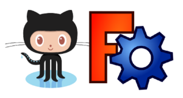
Contenido
[ocultar]- 1 Introducción
- 2 Descargas
- 3 PLAYLIST
- 4 ¡Manos a la obra!
- 4.1 1 Presentación
- 4.2 2 Git clone: bajando proyectos de Github
- 4.3 3 Git pull: ¡dame novedades!
- 4.4 4 Fork me on github!
- 4.5 5 Creando el llavero "hola mundo"
- 4.6 6 Subiendo el llavero hola mundo: git push
- 4.7 7 Contribuyendo: pull request
- 4.8 ¡8 Sincronízate!
- 4.9 9 JUEGO: contribuciones a ciegas
- 4.10 10 Final: Hasta el github y más allá
- 5 Repositorio
- 6 Enlaces
- 7 Autor
- 8 Licencia
- 9 Créditos
- 10 Sobre este tutorial
- 11 Enlaces
Introducción
Freecad pertenece al patrimonio tecnológico de la humanidad. Esto abre las puertas a que cualquier persona del mundo pueda usar esta herramienta para diseñar piezas 3D. El siguiente paso es aunar esfuerzos y aumentar entre todos este patrimonio contribuyendo con nuevas piezas diseñadas. Pero esto sólo es posible si aprendemos a usar herramientas que nos permitan compartir, contribuir y colaborar. Una de ellas es github.
El propósito de esta serie de microtutoriales es enseñarte lo mínimo indispensable de github para que puedas contribuir con tus piezas 3D al incremento del patrimonio tecnológico de la humanidad. Este esfuerzo merecerá la pena.
Se propone un reto: "Crear entre todos una biblioteca de llaveros en Freecad". Es un experimento. Por un lado se dispondrá de un repositorio en github sobre el que se realizarán las entregas de los ejercicios propuestos en los tutoriales, y sobre el que podréis hacer pruebas y ensayos. Por otro lado podremos ver cómo va creciendo con el tiempo, la cantidad de gente que contribuye, etc.
| 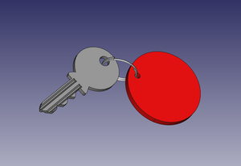 Diseño del Llavero ficha de casino (click para ampliar) |
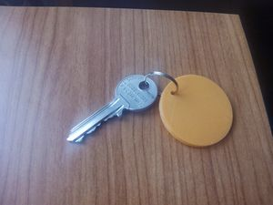 Llavero fichero de casino impreso (click para ampliar) |


¿Por qué llaveros? Bueno, me parece que es algo muy genérico y que se imprime en 3D muy bien. Hay gente que los colecciona. Se pueden regalar. Y prácticamente cualquier cosa se puede convertir en llavero. Así que, ¿Por qué no? :-)
Claves
Tutorial github. Freecad. Patrimonio tecnológico de la humanidad. Piezas 3D. Biblioteca de llaveros en Freecad
Descargas
| Todos los ejemplos están en el repositorio de la biblioteca de llaveros en github |
PLAYLIST
| PLAYLIST CON TODOS LOS VIDEOS DE LA SERIE DE MICRO-TUTORIALES |
|---|
¡Manos a la obra!
1 Presentación
| Video Tutorial 1/10 |
|---|
| 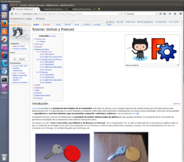 (click para ampliar) |
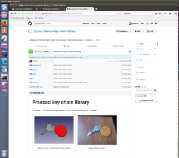 (click para ampliar) |


Descripción
Presentacion de la serie de microtutoriales. La importancia de contribuir y compartir Explicación del "efecto comunidad":
Imaginemos una mínima comunidad de 4 personas, en las que cada una hace un diseño 3D y lo comparte
| 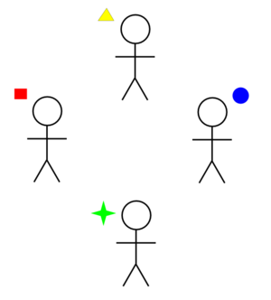 Minicomunidad de 4 usuarios. Cada uno aporta un diseño (click para ampliar) |
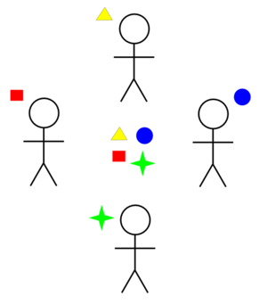 Los 4 comparten sus diseños (click para ampliar) |


El balance es positivo para todos. Cada uno aporta 1 pieza, pero recibe 3. En las comunidades el conocimiento se amplifica y multiplica y siempre se recibe más de lo que se aporta.
| 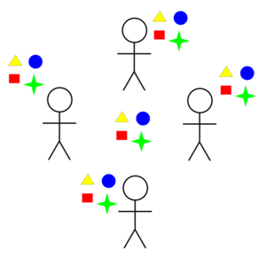 balance positivo para el usuario (click para ampliar) |

¡Vamos a aprender a contribuir!
2 Git clone: bajando proyectos de Github
| Video Tutorial 2/10 |
|---|
| 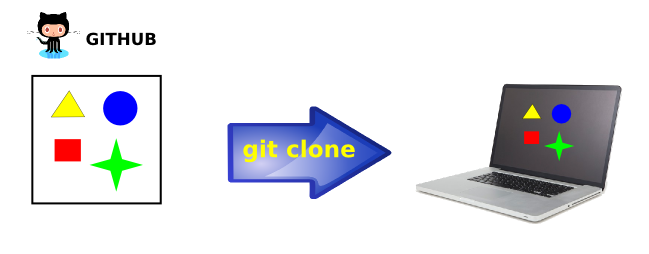 |

Descripción
Navegación web por los proyectos de github y descarga individual de ficheros. Descarga de proyectos completos en nuestros ordenadores mediante el comando git clone.
- Conceptos nuevos: Cliente git, comando git clone
Explicación
Abrir el navegador y entrar en el repositorio de los llaveros. NO hace falta tener cuenta en github ni estar registrado. Podemos acceder a todos los millones de proyectos alojados de manera anónima, así como buscarlos en google. Se puede navegar por las carpetas. Vamos a entrar en la carpeta freecad-src, donde están las fuentes de los llaveros en Freecad
| 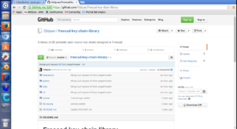 El github del repositorio de los llaveros en FreeCAD (click para ampliar) |
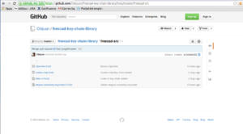 Dentro de la carpeta freecad-src (click para ampliar) |


El repositorio está en inglés (el nombre, los mensajes de los commits, los nombres de las carpetas, etc). Eso lo he creado así aposta. La idea es que puedan contribuir el mayor número de personas a este proyecto, de todas partes del mundo y no sólo los de habla hispana. Por ello, es buena constumbre hacer el esfuerzo de escribir todo lo que se pueda en inglés. Recordad: nuestro objetivo es compartir y aprender a contribuir :-)
Si nos metemos en la carpeta Gallery y pinchamos en los ficheros se abren las imágenes. También se visualizan en 3D los ficheros STLs. Esto es muy útil para saber de qué pieza se trata. Vamos a la carpeta stl y pinchamos por ejemplo en el fichero obijuan-academy.stl. Se abre en 3D en el navegador. Al cabo de unos segundos se pone a rotar automáticamente. Podemos cambiar la cámara apretando el botón izquierdo y moviendo el ratón. También podemos hacer zoon hacia adelante / atrás con la rueda del ratón.
| 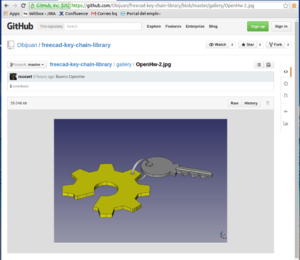 Visualizando la imagen del llavero OSHW aportado por Roberto Carlos Carmona (rcccort) (click para ampliar) |
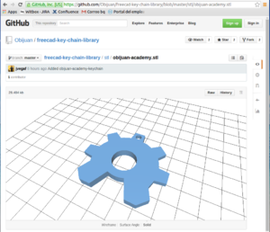 Visualizando en 3D el stl del llavero obijuan-academy, aportado por Jose Vega (click para ampliar) |


También nos podemos bajar ficheros individuales. Vamos a bajarnos el OpenHw.stl para imprimir. En la parte de la derecha hay un botón que pone RAW. Es un enlace directo al fichero para descargarlo. Le damos al botón derecho y lo bajamos. Para verlo, vamos a usar el programa Cura. Lo lanzamos y cargamos el fichero OpenHw.stl. Listo para imprimir! :-)
| 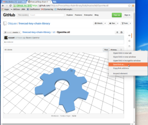 Bajando el fichero OpenHw.stl (click para ampliar) |
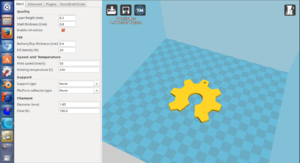 Fichero OpenHw abierto en Cura para imprimirlo (click para ampliar) |


Nos podemos bajar un proyecto completo pinchando en el botón Download ZIP. Se nos generará automáticamente un fichero .zip con todo el proyecto y se comenzará la descarga. Luego lo descomprimimos y listo!!! Todo esto sin haber tenido que crearnos cuentas ni instalar nada en nuestro ordenador.
| 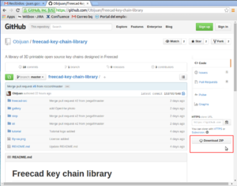 Descargando el proyecto de los llaveros a nuestro ordenador (click para ampliar) |

Para bajarnos un proyecto completo de github necesitamos instalar en nuestro ordenador un cliente de git. Esto dependerá del sistema operativo que estemos usando (Linux, Mac, Windows). El más usado es el propio Página oficial de git , que funciona en la línea de comandos. Los usuarios de Mac y Windows podéis instalaros clientes de git desde este enlace: git inmmersion. También tenéis esta aplicación: SourceTree y si buscáis en google encontraréis muchos más
En este portátil tengo instalado Ubuntu/Linux 14.10. La instalación se realiza muy rápidamente mediante este comando:
$ sudo apt-get install git
Usaremos git desde la línea de comandos. Pero... ¡No os asustéis!. El proceso es muy sencillo. Para constribuir realmente son necesarios muy pocos comandos. Primero aprended a contribuir y luego os instaláis clientes gráficos. Los principios de funcionamiento son los mismos
Una vez instalado el cliente, comprobad que se ejecuta correctamente con este comando (que muestra la versión):
$ git --version
| 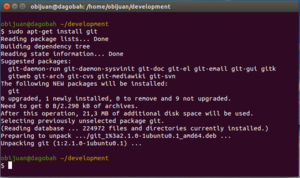 Instalación del cliente git en Ubuntu 14.10 (click para ampliar) |
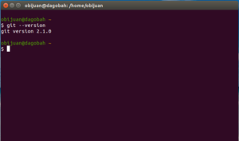 Comprobando que git está instalado correctamente en Ubuntu 14.10 (click para ampliar) |
| 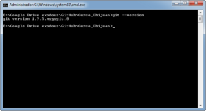 Ejecutando git --version desde un terminal en Windows. Gracias a Juanma Roldan Gomez (Exodous) (click para ampliar) |
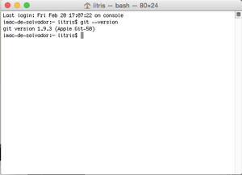 Ejecutando git --version desde un terminal en Mac. Gracias a Salvador Litris (click para ampliar) |


Vamos a bajarnos el repositorio de los llaveros. Esta operación se llama clonar y la realizamos mediante el comando git clone. Nos vamos al repositorio en la web y copiamos la URL que pone en la parte inferior izquierda (ver figura). Luego desde el terminal ejecutamos el siguiente comando:
$ git clone https://github.com/Obijuan/freecad-key-chain-library.git
| 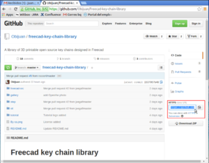 Copiar la URL para clonar el proyecto (click para ampliar) |
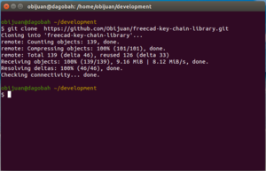 Ejecutando el comando git clone para clonar el respositorio (click para ampliar) |
| 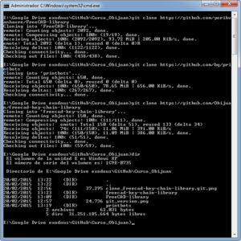 Ejecutando git clone en la terminal de windows. Gracias a Juanma Roldan Gomez (Exodous) (click para ampliar) |
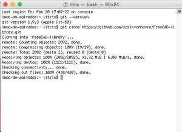 Ejecutando git clone en la terminal de Mac. Gracias a Salvador Litris (click para ampliar) |


Al cabo de unos segundos ya tendremos el proyecto clonado en nuestro ordenador. Se nos habrá creado la carpeta freecad-key-chain-library. Vamos al directorio freecad-key-chain-library/freecad-src y abrimos con freecad uno de los llaveros, por ejemplo el OpenHw.fcstd de Roberto Carlos Carmona
| 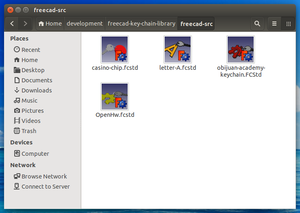 El proyecto de los llaveros en nuestro ordenador (click para ampliar) |
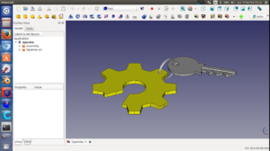 El llavero OpenHw de Roberto Carlos Carmona abierto en Freecad (click para ampliar) |


Ejercicios propuestos
- Ejercicio 1:
- Instalar el cliente git para vuestro Sistema Operativo
- Clonar el repo de los llaveros
- Navegar en local y y abrir algunos llaveros en freecad
| 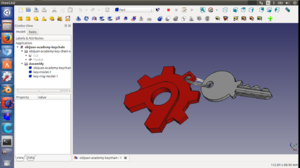 Llavero con el logo de Obijuan Academy, por Jose Vega (click para ampliar) |
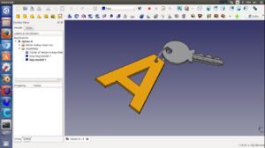 Llavero con la letra A (click para ampliar) |


- Ejercicio 2:
- Clonar el repositorio de la biblioteca de piezas de Freecad
- Navegar en local y abrir algunas piezas
| 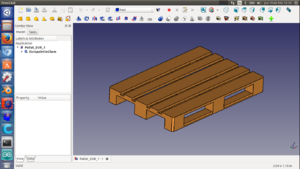 Pallet europeo: FreeCAD-library/Shipping Containers/Pallet_EUR_1.FCStd (click para ampliar) |
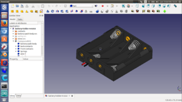 Portapilas: FreeCAD-library/Electrical Parts/Batteries/battery-holder-4-AAA.fcstd (click para ampliar) |


- Ejercicio 3:
- Clonar el repositorio de printbots de bq
- Navegar en local y abrir los ensambles de los robots Renacuajo y Bettle
| 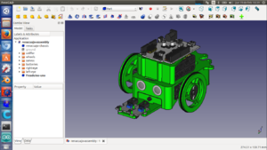 Ensamble 3D del robot Renacuajo de bq: printbots/Renacuajo/freecad/renacuajo-assembly.fcstd (click para ampliar) |
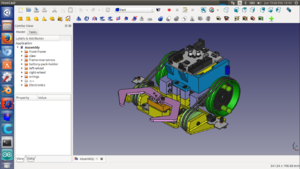 Ensamble 3D del robot Beetle de bq: printbots/Beetle/freecad/Assembly.fcstd (click para ampliar) |


3 Git pull: ¡dame novedades!
| Video Tutorial 3/10 |
|---|
| 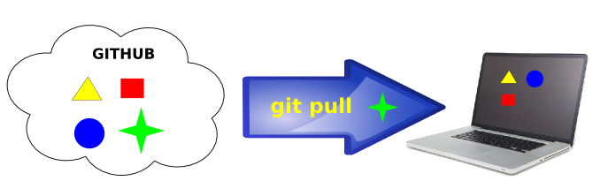 |

Descripción
El comando git clone sólo se ejecuta la primera vez para bajarse una copia local del proyecto. Mediante el comando git pull se nos bajan los cambios nuevos desde la última actualización.
- Conceptos nuevos: comando git pull
Explicación
El repositorio de los llaveros de freecad está en el github (que está en la nube). Cualquiera se lo puede "clonar" para tener una copia local en su ordenador. Esto se hace con el comando git clone. Este comando sólo se ejecuta una vez, para crear la copia del repositorio.
| 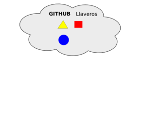 Repositorio de llaveros con 3 piezas (click para ampliar) |
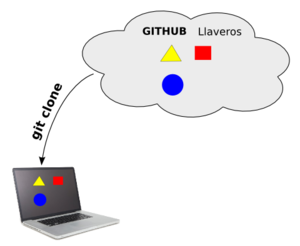 Un usuario se lo clona en su ordenador local (click para ampliar) |


Imaginemos que otros dos usuarios realizan la clonación. Puede tratarse del mismo usuario que clona en diferentes ordenadores, o incluso el mismo usuario que clona en carpetas diferentes. Todo ello sin tener que registrarse. Todos ellos tienen la última versión de los llaveros.
| 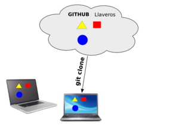 Otro usuario clona el repositorio (click para ampliar) |
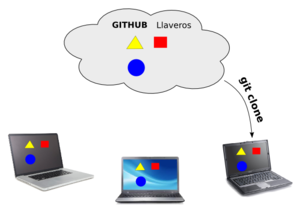 y otro más que lo clona (click para ampliar) |


Uno de esos usuarios diseña un llavero nuevo y lo añade localmente. Supongamos que ese usuario es obijuan, y como tiene permisos de escritura en el respositorio, lo sube (usando el comando git push que veremos más adelante). Ahora el repo de obijuan y el de github están actualizados, pero el del resto de usuarios no
| 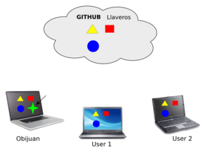 el usuario obijuan crea un llavero nuevo en su ordenador (click para ampliar) |
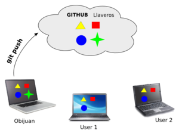 Como obijuan tiene permisos de escritura sube la pieza al repo. El resto de usuarios no la tiene todavía (click para ampliar) |


Cualquier usuario puede actualizarse a la última versión ejecutando el comando git clone. Automáticamente todos los cambios nuevos se le enviarán y su repositorio local estará actualizado con respecto al de github.
En este escenario, sólo los usuarios que tienen permisos pueden subir piezas. El resto se van actualizando. Este modelo es muy común, ya que la mayoría de las veces utilizas proyectos de la comunidad, pero no contribuyes, sólo los usas. Con git pull siempre tendrás la última versión.
| 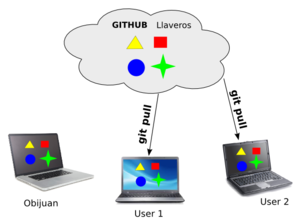 Los usuarios ejecutan git pull y se actualizan (click para ampliar) |
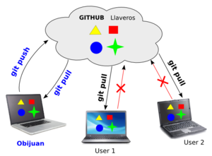 Esquema de trabajo. Sólo los que tienen permisos pueden subir piezas. El resto se actualizan (click para ampliar) |


Nos vamos al repositorio local de los llaveros y ejecutamos el comando git pull para ver las novedades
$ git pull
| 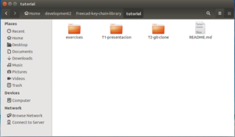 Carpeta tutorial antes de actualizar (click para ampliar) |
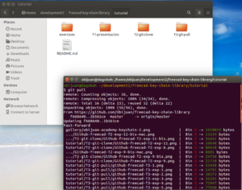 Actualizando el repo. Aparece la carpeta T3-gitpull (click para ampliar) |


Si volvemos a ejecutar el comando, nos aparece el mensaje: "Already up-to-date" para indicarnos que ya está todo actualizado. Es decir, que no hay nada nuevo que bajar. El comando git pull siempre hay que ejecutarlo antes de trabajar con un proyecto, para asegurarnos de que estamos en la última versión.
| 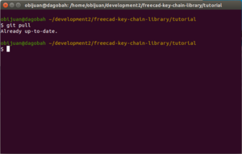 No hay más novedades (click para ampliar) |

Ejercicios propuestos
- Ejercicio 1:: Bajarse las novedades del repositorio de los llaveros de freecad. Los que estéis siguiendo el tutorial en directo, veréis cómo han aparecido ficheros nuevos. Si lo estás siguiendo en diferido y lo acabas de clonar en el tutorial anterior, no se te bajará nada nuevo.
| 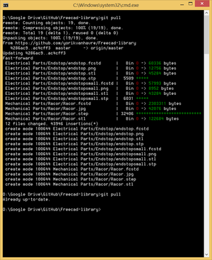 Ejecución del comando git pull en Windows. Gracias a Juanma Roldan Gomez (Exodous) (click para ampliar) |

- Ejercicio 2: Lo mismo con repositorio de las piezas de freecad
- Ejercicio 3: Lo mismo con el repositorio de los printbots de bq
4 Fork me on github!
| Video Tutorial 4/10 |
|---|
| 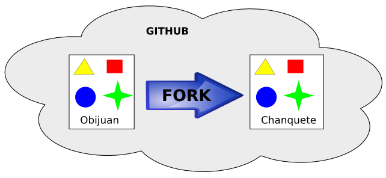 |

Descripción
Plantilla wiki para crear nuevos tutoriales
- Conceptos nuevos:
Explicación
Partimos del escenario que dejamos en el tutorial anterior: el repositorio de llaveros, que le pertenece al usuario Obijuan, que tiene permisos para añadir llaveros (permisos de escritura). El resto de usuarios sólo lo pueden clonar y actualizar, pero no pueden escribir en él.
El usuario chanquete quiere contribuir con un llavero al repositorio. para ello tiene que crearse una cuenta en github. Antes las operaciones eran "anónimas", pero para crear un repositorio tenemos que registrarnos.
| 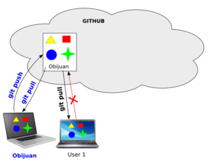 Escenario original del respositorio de llaveros (click para ampliar) |
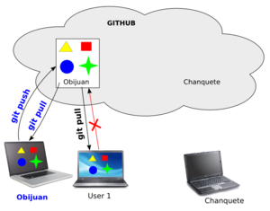 El usuario chanquete quiere contribuir al proyecto (click para ampliar) |


Ahora Chanquete realiza un "fork" del repositorio original de llaveros. Es una copia del proyecto original, pero que pertenece a chanquete. Tiene permisos de escritura en él.
| 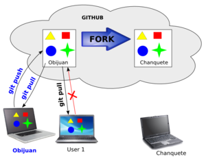 Chanquete realiza un fork del repositorio de llaveros (click para ampliar) |
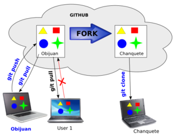 Chanquete clona su repositorio de llaveros para trabajar (click para ampliar) |


Chanquete puede añadir llaveros localmente y subirlos con git push (porque tiene permisos en su repositorio). También puede usar git pull para actualizarse por si hubiese otros usuarios con permisos de escritura en su repositorio. Finalmente, para contribuir al repositorio de llaveros original tiene que emitir una operación "pull request" que veremos más adelante.


Vamos a realizar nuestro primer fork. Lo primero es crearnos una cuenta. En este ejemplo se ha creado un usuario ficticio que se llama obijuan-test. Una vez hemos entrado con nuestro usuario, nos aparece la pantalla que aparece en la figura. En la parte superiore derecha podemos ver nuestro nombre de usuario. Si lo pinchamos nos lleva a nuestra cuenta principal de github. Ahí vemos las contribuciones que llevamos hechas, que hasta ahora son 0.


Si pinchamos en la pestaña de "repositories" nos indica los repositorios que tenemos creados. De momento ninguno.

Nos vamos a la URL del repositorio de los llaveros. Tenemos que estar logeados (nuestro nombre de usuario debe aparecer en la parte superior derecha). Le damos al botón de "FORK" (situado en la parte superior derecha también). En unos segundos se nos empezará a copiar el repositorio original en nuestra cuenta.


Si ahora nos vamos a nuestra página de usuario (pinchando en nuestro nombre de usuario) y vamos otra vez a la pestaña de los repositorios, nos aparecerá un nuevo repositorio que se llamará: "Obijuan-test/freecad-key-chain-library". En la parte inferior pondrá: "forked from Obijuan/freecad-key-chain-library", para indicarnos que originalmente este repositorio ha derivado del de los llaveros de obijuan. Si pinchamos en el respositorio nos llevará a la página principal del repositorio "

Ahora ya sólo nos queda clonarlo en nuestro ordenador local y empezar a trabajar con él.
Ejercicios propuestos
- Ejercicio 1:
- Crearos vuestra cuenta en github
- Hacer un fork del repositorio de los llaveros
- Clonar el repositorio
- Ejercicio 2: Idem con el respositorio de piezas de freecad
- Ejercicio 3: Idem con el respositorio de printbots de bq
5 Creando el llavero "hola mundo"
| Video Tutorial 5/10 |
|---|

Descripción
Vamos a crear nuestro llavero "hola mundo" que será el que subiremos al repositorio de llaveros.
Explicación
Hay dos repositorios de llaveros. El original, que podemos clonar en nuestro ordenador, y el fork que hemos hecho. Son dos repositorios totalmente independientes, pero tu fork te pertenece a tí y tú eres el único con permisos para escribir en él.
Vamos a la carpeta tutorial/exercises de tu fork, que lo tienes clonado en tu ordenador. Ahí crea una nueva carpeta con tu nombre de usuario de github. Esta será donde grabarás el llavero hola mundo y donde podrás hacer pruebas para subirlas al repo y practicar


Vamos ahora a la carpeta freecad-src (en el mismo repo, el del fork) y abrimos el llavero casino-chip.fcstd con freecad. Con la opción file/save as lo grabamos con el nuevo nombre T5-ej1.fcstd en la carpeta que acabamos de crear.


Al abrir el llavero en freecad vemos que hay dos carpetas en la izquierda. Una contiene las piezas para hacer el ensamblaje: el llavero con la llave y una anilla. Es para hacernos una idea del tamaño del llavero. La otra carpeta contiene las fuentes de la propia ficha de casino. Hacemos invisible el ensamblaje y visualizamos la ficha de casino.


Desde el banco de trabajo "part design" seleccionamos la cara superior de la ficha de casino y creamos un boceto nuevo sobre ella.


Hacemos un triángulo mediante la herramienta de multi-línea. El vértice superior lo hacemos coincidir con el eje y. La base del triángulo la hacemos horizontal. Creamos una circunferencia auxiliar centrado en el origen. Hacemos coincidir los tres vértices del triángulo con el perímetro de la circunferencia.


Damos un radio de 11mm a la circunferencia y hacemos que la base sea igual a uno de los lados del triángulo. Ya tenemos el boceto definido. Ahora aplicamos un vaciado y ya tenemos nuestro llavero hola mundo!! Lo grabamos.


Ejercicios propuestos
- Ejercicio 1: Hacer el llavero hola mundo, a partir del llavero ficha de casino. Con un triángulo en el interior

- Ejercicio 2: Hacer el llavero smily. Lo podéis hacer a partir del llavero chasino-chip2.fcstd que está en el repositorio oficial (puede que en vuestro fork no esté, dependiendo de cuando hicistéis el fork). Grabarlo en la carpeta tutorial/exercises/<tu usuario> con el nombre T5-ej2.fcstd


- Ejercicio 3: Hacer el llavero botón de encendido. Grabarlo en la carpeta tutorial/exercises/<tu usuario> con el nombre T5-ej3.fcstd


- Entregas
| [[|thumb|300px| (click para ampliar)]] | [[|thumb|300px| (click para ampliar)]] |
| [[|thumb|300px| (click para ampliar)]] | [[|thumb|300px| (click para ampliar)]] |
Ficheros
| casino-chip.fcstd | Llavero ficha de casino. Hacer el llavero hola mundo a partir de él |
| casino-chip2.fcstd | Llavero ficha de casino, tipo 2. Usado para hacer los ejercicios 2 y 3 |
| casino-chip-triangle.fcstd | Llavero hola mundo. Fuentes en freecad |
| casino-chip-triangle.stl | Llavero hola mundo. STL |
| casino-chip-triangle.step | Llavero hola mundo. STEP |
| smily.fcstd | Llavero Smily. Fuentes en freecad |
| smily.stl | Llavero smily. STL |
| smily.step | Llavero smily. STEP |
| power-on-button.fcstd | Llavero boton de encendido. Fuentes en freecad |
| power-on-button.stl | Llavero botón de encendido. STL |
| power-on-button.step | Llavero botón de encendido. STEP |
6 Subiendo el llavero hola mundo: git push
| Video Tutorial 6/10 |
|---|

Descripción
Meter nuestra aportación del llavero hola mundo en el repositorio local y subirlo al repositorio de github
- Conceptos nuevos: comandos git config, git status, git add, git commit y git push
Explicación
Tenemos dos repositorios, el original de los llaveros y el fork del usuario chanquete. Este último chanquete se lo ha bajado a su ordenador (lo ha clonado) y ha creado el llavero hola mundo que quiere compartir. Primero lo tiene que introducir en el repositorio clonado y después mediante el comando git push se envía al repositorio. El repositorio de chanquete en github recibe el nombre de origin y por defecto siempre se trabaja en la rama master, así que lo identificamos con el nombre origin/master.


Ahora el repo de chanquete tiene un llavero que NO está en el repositorio original de obijuan. Son dos repos independientes. Para que el llavero se incluya en este repo tendrá que hacer una solicitud (un pull request).
Vamos a subir el llavero hola mundo a nuestro repositorio origin / master. Nos vamos a la carpeta tutorial / exercises y abrimos un terminal


Hay que configurar primero el repositorio local, para indicar nuestros datos. Usamos el comando git config para especificar nuestro nombre de usuario y el correo. Git los necesita para asociarlos a nuestras contribuciones. Como mi usuario de ejemplo es obijuan-test, ejecuto los comandos así:
git config user.email "obijuan.cube@gmail.com" git config user.name "obijuan-test"
Ahora ejecutamos el comando git status para ver el estado del repositorio local
git status
Se nos indica que el fichero obijuan-test/T5-ej1.fcstd no pertenece al repositorio. Claro, lo hemos añadido nosotros


Añadimos el fichero a nuestra aportación con el comando git add
git add obijuan-test/T5-ej1.fcstd
Ejecutamos otra vez el comando git status y nos aparece el fichero marcado, indicándonos que está en nuestra aportación. Podríamos añadir más ficheros antes de meter la aportación en nuestro repositorio local.
Hacemos la aportación con el comando git commit. Es obligatorio poner siempre un comentario a las aportaciones. El comando típico para hacer estas aportaciones es:
git commit -m "Mi fichero hola mundo"


Ahora enviamos la aportación al repositorio origin/master con el comando:
git push origin master
Nos pedirá el usuario y la clave. ¡¡Nuestra contribución ya está en el github disponible para todos!!


|
Resumen, una vez configurado todo, el ciclo de trabajo es el siguiente:
|

Ejercicios propuestos
- Ejercicio 1: Subir el llavero hola mundo a vuestro repo
- Ejercicio 2: Subir el llavero smily
- Ejercicio 3: Subir el llavero botón de encendido
7 Contribuyendo: pull request
| Video Tutorial 7/10 |
|---|

Descripción
Haremos nuestra primera contribución al repositorio oficial de llaveros. El primer paso es hacer una solicitud (pull request). El segundo es esperar a que nos la acepten. Todo se hace desde la propia web de github. No es necesario ejecutar comandos en nuestro repositorio local.
- Conceptos nuevos: pull request
Explicación
Para contribuir a un proyecto desde nuestro fork tenemos que lanzar una solicitud (pull request) desde la propia web de github. Esta solicitud quedará registrada en el proyecto y podrá ser atendida por cualquiera que tenga permisos de escritura en ese repositorio. Es decisión de los desarrolladores aceptarla o no. También, es muy común que antes de aceptarla se pongan comentarios de cosas que tienen que ser modificadas antes de poderse integrar.


Vamos a la web de github, a nuestro repositorio de los llaveros. Pinchamos en el icono que está en la parte superior izquierda. Nos aparecerán las contribuciones que hemos hechos nosotros y que NO están en el repositorio original. En nuestro caso sólo hay 1 contribución: el llavero hola mundo. Para comenzar el proceso de emitir una solicitud (pull request) pinchamos en el botón verde que dice "Create pull request" .


Ponemos un título y explicamos en los comentarios cual es nuestra aportación, para que la lea el dueño del repo y decida si aceptarla o no. Luego pichamos en "Create pull request". Ya está creado. Es el número #9 (en este ejemplo). ¡tu primera contribución ha sido enviada! Ahora ya sólo te toca esperar a que te la acepten


Vamos a verlo desde el otro lado. Cuando haces un pull request, los usuarios con permisos reciben una notificación. Al conectarse a la página del repositorio se indicará en la parte superior derecha el número de pull request pendientes. En este caso hay sólo uno. Al pinchar se abre el pull request. Pinchamos para verlo. Nos aparecen los comentarios.


En este caso se acepta el pull request directamente pulsando en "Merge pull request". Desde la página principal se ve que ya no queda ninguno pendiente.


En vuestro perfil aparecerá en qué proyecto habéis contribuido

Ejercicios propuestos
- Ejercicio 1: Emitir pull request de vuestros llaveros hola mundo
- Ejercicio 2: Crear un llavero nuevo, y aportarlo directamente a la biblioteca. Hacer un pull request del fichero freecad, del stl, del step y de una imagen. Cada uno se debe colocar en su carpeta correspondiente: freecad-src, step, stl y gallery
Entregas
- Carlos García Saura (Carlosgs): Primer pull request recibido


- Salvador Liris: Segundo pull request recibido (Litris)

- Jose Ignacio Alonso (jialonso333): Tercer pull request recibido


¡8 Sincronízate!
| Video Tutorial 8/10 |
|---|

Descripción
Como más gente ha hecho aportaciones al repositorio oficial de llaveros, nuestro repo se ha quedado desincronizado. Las aportaciones de los demás no están en nuestro repo. Tenemos que sincronizarlo.
- Conceptos nuevos: upstream, git remote, git fetch, git checkout, git merge
Explicación
En el escenario actual tenemos el repositorio inicial con todas las contribuciones recibidas de la gente, a partir de sus repositorios. Así, por ejemplo, carlosgs ha contribuido con su llavero queso, movilujo con el llavero de TEDx, etc... Si bien en el repo inicial están todas las contribuciones, los forks hechos por la gente están desincronizados.
El repositorio inicial lo denominamos upstream/master. El repositorio del usuario chanquete (origin / master) no está sincronizado con el upstream. Hay llaveros en el upstream que no están en el repo de chanquete.


Para sincronizarle tiene que configurar su repositorio local para establecer el upstream. Luego mediante el comando git fetch se baja el reporitorio upstream. Ahora tiene los dos repositorios en local. El repositorio activo es el último que se ha bajado. Se indica con una flecha en el dibujo. Queremos que el activo sea el nuestro local. Cambiamos a él mediante el comando git checkout.


Con el comando git merge se mezclan los dos repositorios. ¡El repositorio local queda sincronizado!


Ahora lo enviamos al github con el comando git push, de modo que el repositorio origin/master también queda sincronizado

¡Pasamos a la acción! Vamos a sincronizar nuestro repositorio para tener las constribuciones del resto de usuario. Nos vamos a la web de github, a nuestro repositorio. En la figura se muestra el del usuario de prueba obijuan-test, que está 100 contribuciones por detrás del repo oficial.
Nos vamos ahora al github del repositorio upstream y copiamos su dirección (lo mismo que cuando lo clonamos). La necesitaremos para configurar el upstream en nuestro repositorio local.


Configuramos el upstream mediante el comando git remote add:
git remote add upstream https://github.com/Obijuan/freecad-key-chain-library.git
Podemos comprobar que está configurado correctamente con:
git remote -v
Nos bajamos el repositorio upstream con git fetch upstream:
git fetch upstream


Cambiamos al repositorio local, a la rama master:
git checkout master
y fusionamos el repositorio upstream/master:
git merge upstream/master
Comprobamos con git status, y en este ejemplo vemos que hay 100 aportaciones nuevas
Por último subimos las aportaciones al repositorio origin/master con git push:
git push origin master
¡Ya estamos sincronizados!


Si ahora miramos nuestro repo en la web de github, vemos en la parte superior izquierda que ahora nuestro repo está a la par que el inicial de obijuan.

Como resumen, una vez que se tiene configurada la dirección del repositorio upstream, los comandos que hay que ejecutar para sincronizar el repo son los siguientes:

Pantallazos de la sincronización en Mac:


Pantallazos de la sincronización en Windows:


Ejercicios propuestos
- Ejercicio 1: Sincronizarse con el repositorio de llaveros
9 JUEGO: contribuciones a ciegas
| Video Tutorial 9/10 |
|---|

Descripción
Se plantea el juego de "las contribuciones a ciegas" para aprender a crear repositorios, recibir contribuciones y practicar un poco más las aportaciones a otros
- Conceptos nuevos: Crear repositorio, aceptar pull request
Explicación
Para jugar al juego de las contribuciones a ciegas tenemos que crear un repositorio en nuestra cuenta de github. Entramos en github y en la parte superior derecha desplegamos el icono que tiene un +. Seleccionamos la opción new repository. Rellenamos los datos para crear el repositorio:
- Nombre del repositorio: contribucion-a-ciegas
- Descripción: Repositorio para jugar al juego de las contribuciones a ciegas
Marcamos la casilla que dice "Initialize this repository with a README" y pulsamos el botón verde "create repository"


¡Ya tenemos un repositorio nuevo! Y nosotros somos los dueños, con permisos de escritura, para subir cualquier fichero o realizar modificaciones. Si miramos en nuestra lista de repositorios, nos aparecerá el nuevo, junto con el que ya teníamos de los llaveros


Ahora clonamos el repositorio en nuestro ordenador con git clone. Si nos metemos en la carpeta veremos que sólo contiene el fichero README.md


Creamos dos carpetas, llamadas contribuciones y visitas. En cada una de ellas creamos un fichero README.md. En el de contribuciones ponemos:
Sube aquí tus contribuciones :-)
y en el de visitas:
Deja tu firma en el libro de visitas!! Crea un fichero tu_nick.txt y deja tu mensaje!!
Hacemos un git status y vemos que las carpetas están en rojo porque no las hemos añadido todavía. No aparecen los README porque las carpetas NO están añadidas.


Añadimos los ficheros README (las carpetas se añaden automáticamente):
git add contribuciones/README.md git add visitas/README.md
Hacemos la contribución local:
git commit -m "Creadas carpetas contribuciones y visitas y añadidos ficheros README"
y la subimos al repositorio de github:
git push origin master


Comprobamos en la web de github que tenemos nuestra contribución subida. ¡Listos para jugar!

El juego
El juego es muy sencillo. Una vez creado tu repo "contribucion-a-ciegas", tendrás que buscar a otros usuarios que también lo tengan creado y hacerles una contribución a su repo. Puede ser cualquier cosa: una imagen, una figura, un texto, una foto... ¡Sorpréndeles!. Al hacer una contribución (en el directorio contribuciones) hay que escribir algo también en el libro de visitas. Sube un fichero tu_nick.txt con tu texto en el directorio visitas.
Hay una regla: Si alguien te hace una contribución, tu le tienes que hacer otra en su repo.
Para buscar potenciales usuarios a los que hacerles contribuciones, mirar la lista de contribuidores en el repositorio oficial de los llaveros en github, pinchando en la parte superior izquierda donde pone contributors. Ir a sus perfiles y mirar si tienen creado el repositorio contribución-a-ciegas. Si es así, hazles una contribución. Y ellos tendrán que hacerte una a tí :-)


¿Qué contribuciones te harán? ¿Cuantos pull request recibirás? :-)
10 Final: Hasta el github y más allá
| Video Tutorial 10/10 |
|---|

Descripción
Fin de los tutoriales. Muchas gracias a todos por vuestras contribuciones. Con lo que ya sabéis podéis contribuir en los proyectos de otros y crear los vuestros propios. Os animo a que exploréis más el git, que es una herramienta super potente. Y no os perdáis los rankings de usuarios más activos en github de JJmelero!
¡Gracias!
Repositorio
Los ficheros fuentes están en este repositorio:
Enlaces
- Git, la guía sencilla
- Guía rápida para usar github
- Aprende Git: ... y, de camino, GitHub. Libro en Amazon, por Juan Julián Melero (jjmelero)
- Ranking the usuarios más activos en Github de España. Página principal. JJMelero
Autor
- Juan González (Obijuan)
Licencia
 This work is licensed under a Creative commons Attributions Sharealike. This work is licensed under a Creative commons Attributions Sharealike.
|
Créditos
- Roberto Carlos Carmona (rcccord): Llavero con el logo del hardware libre. ¡Gracias!
- Jose Vega: Llavero con el logo de la Obijuan Academy. ¡Gracias!
- Pablo Clemente (Paclema). Consejos y ayuda sobre github en Windows. ¡Gracias!
- Juanma Roldan Gomez (Exodous). Pantallazos de git en Windows. Llavero Vendetta. ¡Gracias!
- Salvador Litris. Pantallazos de git en Max y llavero THX. ¡Gracias!
- Antonio Ruiz Cuellar. Pantallazos de git en Windows. ¡Gracias!
- LLuis Vilarubies: Llavero de Octoprint. ¡Gracias!
- Jose Luis Villarejo: Llavero de TEDx. ¡Gracias!
- Carlos García Saura: Llavero de Queso. ¡Gracias!
- Jose Ignacio Alonso: Llavero github. ¡Gracias!
- Marckstack: Llavero de cubos. ¡Gracias!
- Jon (b1-66er): Llavero León. ¡Gracias!
- AngelLM: Pokellavero. ¡Gracias!
- furanshishouco: Llavero con el logo de freecad. ¡Gracias!
- José Montes Moreno (jota-mon3): Llaveros imperio, alianza rebelde y twitter
- Diego Mallo Menéndez: Llavero Ubuntu. ¡Gracias!
Sobre este tutorial
Este tutorial está realizado exclusivamente usando herramientas libres.
|
Enlaces
|
|
Proyecto Clone wars: Construye tu impresora 3D opensource! |
 |
Proyecto RepRap: Impresoras 3D auto-replicantes. El origen de la revolución de las impresoras 3D opensource |
|
|
Obijuan Academy, Tu academia rebelde! ;-) |